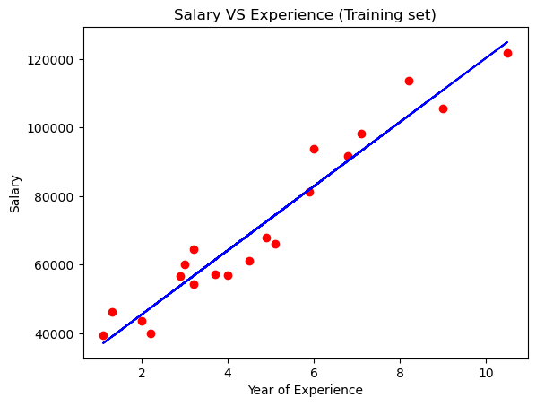
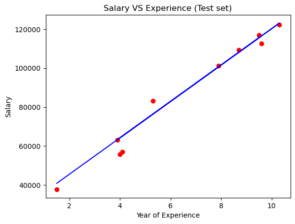
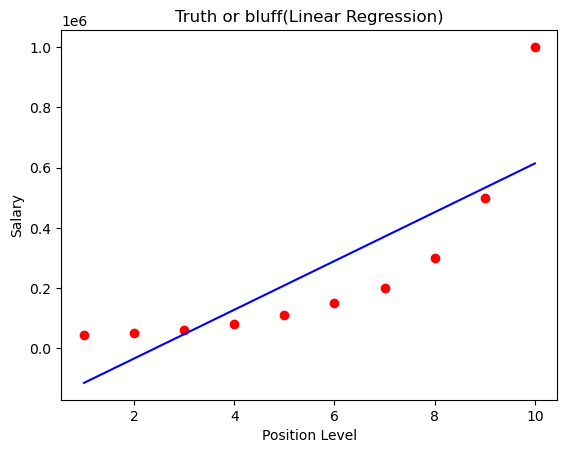
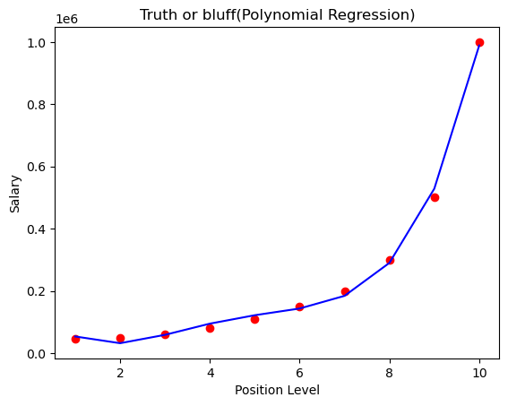

#1 Importing essential libraries
import pandas as pd
import numpy as np
%matplotlib inline
import matplotlib.pyplot as pltSimple Linear Regression
Load the Packages
Load the Dataset
dataset = pd.read_csv('data/salary_data.csv')dataset.shape(30, 2)dataset.tail()| YearsExperience | Salary | |
|---|---|---|
| 25 | 9.0 | 105582 |
| 26 | 9.5 | 116969 |
| 27 | 9.6 | 112635 |
| 28 | 10.3 | 122391 |
| 29 | 10.5 | 121872 |
dataset.sample(10)| YearsExperience | Salary | |
|---|---|---|
| 4 | 2.2 | 39891 |
| 14 | 4.5 | 61111 |
| 0 | 1.1 | 39343 |
| 19 | 6.0 | 93940 |
| 18 | 5.9 | 81363 |
| 17 | 5.3 | 83088 |
| 22 | 7.9 | 101302 |
| 15 | 4.9 | 67938 |
| 29 | 10.5 | 121872 |
| 10 | 3.9 | 63218 |
# Data --->split Data into 2 parts (Samples: 1: Independent(Input), 2: Target(Output))X = dataset.iloc[:, :-1].values #get a copy of dataset exclude last column
y = dataset.iloc[:, 1].values #get array of dataset in column 1styarray([ 39343, 46205, 37731, 43525, 39891, 56642, 60150, 54445,
64445, 57189, 63218, 55794, 56957, 57081, 61111, 67938,
66029, 83088, 81363, 93940, 91738, 98273, 101302, 113812,
109431, 105582, 116969, 112635, 122391, 121872], dtype=int64)Xarray([[ 1.1],
[ 1.3],
[ 1.5],
[ 2. ],
[ 2.2],
[ 2.9],
[ 3. ],
[ 3.2],
[ 3.2],
[ 3.7],
[ 3.9],
[ 4. ],
[ 4. ],
[ 4.1],
[ 4.5],
[ 4.9],
[ 5.1],
[ 5.3],
[ 5.9],
[ 6. ],
[ 6.8],
[ 7.1],
[ 7.9],
[ 8.2],
[ 8.7],
[ 9. ],
[ 9.5],
[ 9.6],
[10.3],
[10.5]])Model Training
# Splitting the dataset into the Training set and Test set
from sklearn.model_selection import train_test_split # splitting the data into train and test
X_train, X_test, y_train, y_test = train_test_split(X, y, test_size=1/3, random_state=0)y_trainarray([ 56642, 66029, 64445, 61111, 113812, 91738, 46205, 121872,
60150, 39891, 81363, 93940, 57189, 54445, 105582, 43525,
39343, 98273, 67938, 56957], dtype=int64)y_testarray([ 37731, 122391, 57081, 63218, 116969, 109431, 112635, 55794,
83088, 101302], dtype=int64)Model Building
# Fitting Simple Linear Regression to the Training set
from sklearn.linear_model import LinearRegression
regressor = LinearRegression() # algorithm
regressor.fit(X_train, y_train) # fitting the model (learning)LinearRegression()Visualize Train
# Visualizing the Training set results
plt.scatter(X_train, y_train, color='red')
plt.plot(X_train, regressor.predict(X_train), color='blue')
plt.title('Salary VS Experience (Training set)')
plt.xlabel('Year of Experience')
plt.ylabel('Salary')
plt.show()
Visualize Test
# Visualizing the Test set results
plt.scatter(X_test, y_test, color='red')
# plt.plot(X_train, regressor.predict(X_train), color='blue')
plt.plot(X_test, regressor.predict(X_test), color='blue')
plt.title('Salary VS Experience (Test set)')
plt.xlabel('Year of Experience')
plt.ylabel('Salary')
plt.show()
Multiple Linear Regression
import numpy as np
import pandas as pd
import sklearn.linear_model
from sklearn.model_selection import train_test_split
from sklearn.datasets import load_boston
from sklearn.metrics import mean_squared_error, r2_scorebh_data = load_boston()C:\Users\Administrator\anaconda3\lib\site-packages\sklearn\utils\deprecation.py:87: FutureWarning: Function load_boston is deprecated; `load_boston` is deprecated in 1.0 and will be removed in 1.2.
The Boston housing prices dataset has an ethical problem. You can refer to
the documentation of this function for further details.
The scikit-learn maintainers therefore strongly discourage the use of this
dataset unless the purpose of the code is to study and educate about
ethical issues in data science and machine learning.
In this special case, you can fetch the dataset from the original
source::
import pandas as pd
import numpy as np
data_url = "http://lib.stat.cmu.edu/datasets/boston"
raw_df = pd.read_csv(data_url, sep="\s+", skiprows=22, header=None)
data = np.hstack([raw_df.values[::2, :], raw_df.values[1::2, :2]])
target = raw_df.values[1::2, 2]
Alternative datasets include the California housing dataset (i.e.
:func:`~sklearn.datasets.fetch_california_housing`) and the Ames housing
dataset. You can load the datasets as follows::
from sklearn.datasets import fetch_california_housing
housing = fetch_california_housing()
for the California housing dataset and::
from sklearn.datasets import fetch_openml
housing = fetch_openml(name="house_prices", as_frame=True)
for the Ames housing dataset.
warnings.warn(msg, category=FutureWarning)type(bh_data)sklearn.utils.Bunchprint(bh_data.keys())dict_keys(['data', 'target', 'feature_names', 'DESCR', 'filename', 'data_module'])print(bh_data.DESCR).. _boston_dataset:
Boston house prices dataset
---------------------------
**Data Set Characteristics:**
:Number of Instances: 506
:Number of Attributes: 13 numeric/categorical predictive. Median Value (attribute 14) is usually the target.
:Attribute Information (in order):
- CRIM per capita crime rate by town
- ZN proportion of residential land zoned for lots over 25,000 sq.ft.
- INDUS proportion of non-retail business acres per town
- CHAS Charles River dummy variable (= 1 if tract bounds river; 0 otherwise)
- NOX nitric oxides concentration (parts per 10 million)
- RM average number of rooms per dwelling
- AGE proportion of owner-occupied units built prior to 1940
- DIS weighted distances to five Boston employment centres
- RAD index of accessibility to radial highways
- TAX full-value property-tax rate per $10,000
- PTRATIO pupil-teacher ratio by town
- B 1000(Bk - 0.63)^2 where Bk is the proportion of black people by town
- LSTAT % lower status of the population
- MEDV Median value of owner-occupied homes in $1000's
:Missing Attribute Values: None
:Creator: Harrison, D. and Rubinfeld, D.L.
This is a copy of UCI ML housing dataset.
https://archive.ics.uci.edu/ml/machine-learning-databases/housing/
This dataset was taken from the StatLib library which is maintained at Carnegie Mellon University.
The Boston house-price data of Harrison, D. and Rubinfeld, D.L. 'Hedonic
prices and the demand for clean air', J. Environ. Economics & Management,
vol.5, 81-102, 1978. Used in Belsley, Kuh & Welsch, 'Regression diagnostics
...', Wiley, 1980. N.B. Various transformations are used in the table on
pages 244-261 of the latter.
The Boston house-price data has been used in many machine learning papers that address regression
problems.
.. topic:: References
- Belsley, Kuh & Welsch, 'Regression diagnostics: Identifying Influential Data and Sources of Collinearity', Wiley, 1980. 244-261.
- Quinlan,R. (1993). Combining Instance-Based and Model-Based Learning. In Proceedings on the Tenth International Conference of Machine Learning, 236-243, University of Massachusetts, Amherst. Morgan Kaufmann.
boston = pd.DataFrame(bh_data.data, columns=bh_data.feature_names)boston| CRIM | ZN | INDUS | CHAS | NOX | RM | AGE | DIS | RAD | TAX | PTRATIO | B | LSTAT | |
|---|---|---|---|---|---|---|---|---|---|---|---|---|---|
| 0 | 0.00632 | 18.0 | 2.31 | 0.0 | 0.538 | 6.575 | 65.2 | 4.0900 | 1.0 | 296.0 | 15.3 | 396.90 | 4.98 |
| 1 | 0.02731 | 0.0 | 7.07 | 0.0 | 0.469 | 6.421 | 78.9 | 4.9671 | 2.0 | 242.0 | 17.8 | 396.90 | 9.14 |
| 2 | 0.02729 | 0.0 | 7.07 | 0.0 | 0.469 | 7.185 | 61.1 | 4.9671 | 2.0 | 242.0 | 17.8 | 392.83 | 4.03 |
| 3 | 0.03237 | 0.0 | 2.18 | 0.0 | 0.458 | 6.998 | 45.8 | 6.0622 | 3.0 | 222.0 | 18.7 | 394.63 | 2.94 |
| 4 | 0.06905 | 0.0 | 2.18 | 0.0 | 0.458 | 7.147 | 54.2 | 6.0622 | 3.0 | 222.0 | 18.7 | 396.90 | 5.33 |
| ... | ... | ... | ... | ... | ... | ... | ... | ... | ... | ... | ... | ... | ... |
| 501 | 0.06263 | 0.0 | 11.93 | 0.0 | 0.573 | 6.593 | 69.1 | 2.4786 | 1.0 | 273.0 | 21.0 | 391.99 | 9.67 |
| 502 | 0.04527 | 0.0 | 11.93 | 0.0 | 0.573 | 6.120 | 76.7 | 2.2875 | 1.0 | 273.0 | 21.0 | 396.90 | 9.08 |
| 503 | 0.06076 | 0.0 | 11.93 | 0.0 | 0.573 | 6.976 | 91.0 | 2.1675 | 1.0 | 273.0 | 21.0 | 396.90 | 5.64 |
| 504 | 0.10959 | 0.0 | 11.93 | 0.0 | 0.573 | 6.794 | 89.3 | 2.3889 | 1.0 | 273.0 | 21.0 | 393.45 | 6.48 |
| 505 | 0.04741 | 0.0 | 11.93 | 0.0 | 0.573 | 6.030 | 80.8 | 2.5050 | 1.0 | 273.0 | 21.0 | 396.90 | 7.88 |
506 rows × 13 columns
boston['MEDV'] = bh_data.targetboston| CRIM | ZN | INDUS | CHAS | NOX | RM | AGE | DIS | RAD | TAX | PTRATIO | B | LSTAT | MEDV | |
|---|---|---|---|---|---|---|---|---|---|---|---|---|---|---|
| 0 | 0.00632 | 18.0 | 2.31 | 0.0 | 0.538 | 6.575 | 65.2 | 4.0900 | 1.0 | 296.0 | 15.3 | 396.90 | 4.98 | 24.0 |
| 1 | 0.02731 | 0.0 | 7.07 | 0.0 | 0.469 | 6.421 | 78.9 | 4.9671 | 2.0 | 242.0 | 17.8 | 396.90 | 9.14 | 21.6 |
| 2 | 0.02729 | 0.0 | 7.07 | 0.0 | 0.469 | 7.185 | 61.1 | 4.9671 | 2.0 | 242.0 | 17.8 | 392.83 | 4.03 | 34.7 |
| 3 | 0.03237 | 0.0 | 2.18 | 0.0 | 0.458 | 6.998 | 45.8 | 6.0622 | 3.0 | 222.0 | 18.7 | 394.63 | 2.94 | 33.4 |
| 4 | 0.06905 | 0.0 | 2.18 | 0.0 | 0.458 | 7.147 | 54.2 | 6.0622 | 3.0 | 222.0 | 18.7 | 396.90 | 5.33 | 36.2 |
| ... | ... | ... | ... | ... | ... | ... | ... | ... | ... | ... | ... | ... | ... | ... |
| 501 | 0.06263 | 0.0 | 11.93 | 0.0 | 0.573 | 6.593 | 69.1 | 2.4786 | 1.0 | 273.0 | 21.0 | 391.99 | 9.67 | 22.4 |
| 502 | 0.04527 | 0.0 | 11.93 | 0.0 | 0.573 | 6.120 | 76.7 | 2.2875 | 1.0 | 273.0 | 21.0 | 396.90 | 9.08 | 20.6 |
| 503 | 0.06076 | 0.0 | 11.93 | 0.0 | 0.573 | 6.976 | 91.0 | 2.1675 | 1.0 | 273.0 | 21.0 | 396.90 | 5.64 | 23.9 |
| 504 | 0.10959 | 0.0 | 11.93 | 0.0 | 0.573 | 6.794 | 89.3 | 2.3889 | 1.0 | 273.0 | 21.0 | 393.45 | 6.48 | 22.0 |
| 505 | 0.04741 | 0.0 | 11.93 | 0.0 | 0.573 | 6.030 | 80.8 | 2.5050 | 1.0 | 273.0 | 21.0 | 396.90 | 7.88 | 11.9 |
506 rows × 14 columns
X = pd.DataFrame(np.c_[boston['LSTAT'], boston['RM']], columns=['LSTAT','RM'])
y = boston['MEDV']X| LSTAT | RM | |
|---|---|---|
| 0 | 4.98 | 6.575 |
| 1 | 9.14 | 6.421 |
| 2 | 4.03 | 7.185 |
| 3 | 2.94 | 6.998 |
| 4 | 5.33 | 7.147 |
| ... | ... | ... |
| 501 | 9.67 | 6.593 |
| 502 | 9.08 | 6.120 |
| 503 | 5.64 | 6.976 |
| 504 | 6.48 | 6.794 |
| 505 | 7.88 | 6.030 |
506 rows × 2 columns
y0 24.0
1 21.6
2 34.7
3 33.4
4 36.2
...
501 22.4
502 20.6
503 23.9
504 22.0
505 11.9
Name: MEDV, Length: 506, dtype: float64X_train, X_test, y_train, y_test = train_test_split(X, y, test_size = 0.2, random_state=9)lin_reg_mod = sklearn.linear_model.LinearRegression()lin_reg_mod.fit(X_train, y_train)LinearRegression()pred = lin_reg_mod.predict(X_test)X_test| LSTAT | RM | |
|---|---|---|
| 464 | 13.22 | 6.209 |
| 419 | 22.74 | 6.824 |
| 277 | 4.16 | 6.826 |
| 491 | 18.07 | 5.983 |
| 337 | 10.56 | 5.895 |
| ... | ... | ... |
| 34 | 20.34 | 6.096 |
| 335 | 8.01 | 6.037 |
| 159 | 7.39 | 6.510 |
| 89 | 5.70 | 7.079 |
| 216 | 13.51 | 5.888 |
102 rows × 2 columns
predarray([21.80040181, 19.03575462, 30.5810956 , 17.63337196, 21.84572503,
20.77273672, 30.08111013, 31.49662099, 21.76680631, 16.69914664,
17.42056565, 27.96976997, 19.09658757, 30.11661531, 14.97117382,
32.49807474, 19.73613724, 22.72074261, 32.34118101, 18.89678951,
26.59690126, 3.96334558, 25.41234245, 20.3913464 , 30.42950405,
36.81304146, 25.83167928, 21.41923623, 20.45615586, 23.80420049,
15.93279374, 18.0945122 , 20.39932966, 18.89871427, 20.80906565,
13.56057572, 29.42793051, 19.450059 , 12.82623071, 36.68548201,
16.5151803 , 24.36809678, 16.92738008, 35.9136997 , 33.27320456,
17.40562519, 29.37317122, 27.98951839, 4.48663673, 26.07510046,
29.90798035, 36.03165831, 21.9425572 , 27.62254433, 11.47973056,
19.76729131, 20.15664243, 13.26469435, 29.24331265, 19.78001509,
21.42287583, 28.00710994, 12.04308037, 0.5829936 , 30.66032132,
17.92764319, 17.11902267, 22.83125726, 19.12522525, 17.62954514,
36.06886342, 1.75661853, 28.96184754, 30.08504182, 18.63926661,
24.26164868, 26.3306687 , 35.48420783, 17.95153297, 21.41302034,
20.50793454, 30.67498468, 17.99964206, 36.50848042, 12.69423781,
22.23275451, 25.60219505, 20.97533548, 15.64011774, 15.27769699,
23.27893231, 19.63836136, 30.54723801, 24.20008195, 21.21140257,
29.30020629, 25.84427574, 16.80206738, 24.15517814, 26.95947178,
30.91909483, 19.97845757])test_set_rmse = (np.sqrt(mean_squared_error(y_test, pred)))
test_set_r2 = r2_score(y_test, pred)print(test_set_rmse)
print(test_set_r2)6.035041736063677
0.6400551238836978source: https://stackabuse.com/multiple-linear-regression-with-python
with another dataset:
https://stackabuse.com/multiple-linear-regression-with-python/
Polynomial Regression
#importing the libraries
import numpy as np
import pandas as pd
import matplotlib.pyplot as plt
%matplotlib inline#importing the dataset
dataset=pd.read_csv('data/Position_Salaries.csv')location: https://www.kaggle.com/akram24/position-salaries
dataset.info<bound method DataFrame.info of Position Level Salary
0 Business Analyst 1 45000
1 Junior Consultant 2 50000
2 Senior Consultant 3 60000
3 Manager 4 80000
4 Country Manager 5 110000
5 Region Manager 6 150000
6 Partner 7 200000
7 Senior Partner 8 300000
8 C-level 9 500000
9 CEO 10 1000000>X=dataset.iloc[:,1:2].values
y=dataset.iloc[:,2].values#fitting the linear regression model to the dataset
from sklearn.linear_model import LinearRegression
lin_reg=LinearRegression()
lin_reg.fit(X,y)LinearRegression()#fitting the polynomial regression model to the dataset
from sklearn.preprocessing import PolynomialFeatures
poly_reg=PolynomialFeatures(degree=4)
X_poly=poly_reg.fit_transform(X)
poly_reg.fit(X_poly,y)
lin_reg2=LinearRegression()
lin_reg2.fit(X_poly,y)LinearRegression()#Visualisng the linear regression model results
plt.scatter(X,y,color='red')
plt.plot(X,lin_reg.predict(X),color='blue')
plt.title('Truth or bluff(Linear Regression)')
plt.xlabel('Position Level')
plt.ylabel('Salary')
plt.show()
#Visualising the pollynomial regression model results
X_grid=np.arange(min(X),max(X),0.1)
X_grid=X_grid.reshape((len(X_grid),1))
plt.scatter(X,y,color='red')
plt.plot(X,lin_reg2.predict(poly_reg.fit_transform(X)),color='blue')
plt.title('Truth or bluff(Polynomial Regression)')
plt.xlabel('Position Level')
plt.ylabel('Salary')
plt.show()
#predictig the result of linear regression model.
lin_reg.predict(np.array([ [6.5] ]) )array([330378.78787879])#predicting the result of polynomial regression.
lin_reg2.predict( poly_reg.fit_transform(np.array([ [6.5] ]) ))array([158862.4526516])Polynomial regression models gives us a much more accurate prediction.
source: https://iq.opengenus.org/polynomial-regression-using-scikit-learn/
https://notebook.community/dibgerge/ml-coursera-python-assignments/Exercise1/exercise1